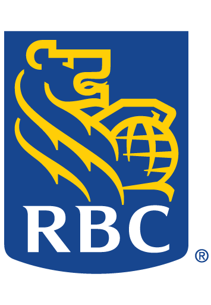
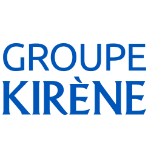

×

My Project page is still under construction. Please check back at a later time.
More on my past work experiences:
- Blackberry (Research in Motion)
1st Co-Op Experience. This opportunity really allowed me to set foot in the workplace and experience firsthand the concept of 'downsizing'. I was able to obtain a view on the security industry and the assimilation of two different enterprises into one (Good Technology being bought by Blackberry at the time).
 - Royal Bank of Canada (RBC)
2nd Co-Op Experience. Through this I was able to see the inner workings of a large bank from a Technological Department standpoint. The IIPM team (in charge of the storing and codification for all application/technology products related items) gave a unique viewpoint. Opportunity to work on solo project for the first time.
 - Kirène Group (Part of SIAGRO)
3rd Co-Op Experience. WORK IN PROGRESS
My Project page is still under construction. Please check back at a later time.